가스기사 (2022-04-24 기출문제)
1과목: 가스유체역학
1. 관로의 유동에서 여러 가지 손실수두를 나타낸 것으로 틀린 것은? (단, f : 마찰계수, d : 관의 지름,
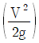
: 속도 수두,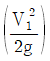
: 입구관 속도 수두,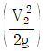
: 출구관 속도 수두, Rh : 수력반지름, L : 관의 길이, A : 관의 단면적, Cc : 단면적 축소계수이다.)- 원형관 속의 손실수두 :
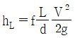
- 비원형관 속의 손실수두 :
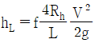
- 돌연 확대관 손실수두 :
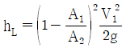
- 돌연 축소관 손실수두 :
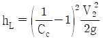
(정답률: 19%)

2. 980cSt 의 동점도(kinematic viscosity)는 몇 m2/s 인가?
- 10-4
- 9.8 × 10-4
- 1
- 9.8
(정답률: 32%)
3. 다음 중 실제유체와 이상유체에 모두 적용되는 것은?
- 뉴턴의 점성법칙
- 압축성
- 점착조건(no slip conditon)
- 에너지 보존의 법칙
(정답률: 33%)
4. 진공압력이 0.10 kgf/cm2이고, 온도가 20℃ 인 기체가 계기압력 7kgf/cm2로 등온압축되었다. 이때 압축 전 체적(V1)에 대한 압축 후의 체적(V2)의 비는 얼마인가? (단, 대기압은 720mmHg 이다.)
- 0.11
- 0.14
- 0.98
- 1.41
(정답률: 10%)
5. 안지름 100mm인 관속을 압력 5kgf/cm2, 온도 15℃인 공기가 2kg/s 로 흐를 때 평균 유속은? (단, 공기의 기체상수는 29.27 kgf·m/kg·K 이다.)
- 4.28 m/s
- 5.81 m/s
- 42.9 m/s
- 55.8 m/s
(정답률: 15%)
6. 표면장력계수의 차원을 옳게 나타낸 것은? (단, M은 질량, L은 길이, T는 시간의 차원이다.)
- MLT-2
- MT-2
- LT-1
- ML-1T-2
(정답률: 21%)
7. 초음속 흐름이 갑자기 아음속 흐름으로 변할 때 얇은 불연속 면의 충격파가 생긴다. 이 불연속 면에서의 변화로 옳은 것은?
- 압력은 감소하고 밀도는 증가한다.
- 압력은 증가하고 밀도는 감소한다.
- 온도와 엔트로피가 증가한다.
- 온도와 엔트로피가 감소한다.
(정답률: 24%)
8. 비중이 0.887인 원유가 관의 단면적이 0.0022m2인 관에서 체적 유량이 10.0m3/h 일 때 관의 단위 면적당 질량유량(kg/m2·s)은?
- 1120
- 1220
- 1320
- 1420
(정답률: 18%)
9. 온도 27℃의 이산화탄소 3kg이 체적 0.30m3의 용기에 가득 차 있을 때 용기 내의 압력(kgf/cm2)은? (단, 일반기체상수는 848 kgf·m/kmol·K 이고, 이산화탄소의 분자량은 44 이다.)
- 5.79
- 24.3
- 100
- 270
(정답률: 18%)
10. 물이나 다른 액체를 넣은 타원형 용기를 회전하고 그 용적변화를 이용하여 기체를 수송하는 장치로 유독성 가스를 수송하는 데 적합한 것은?
- 로베(lobe) 펌프
- 터보(turbo) 압축기
- 내쉬(nash) 펌프
- 팬(fan)
(정답률: 23%)
11. 내경이 0.⑤26m인 철관에 비압축성 유체가 9.085 m3/h 로 흐를 때의 평균유속은 약 몇 m/s 인가? (단, 유체의 밀도는 1200 kg/m3 이다.)
- 1.16
- 3.26
- 4.68
- 11.6
(정답률: 26%)
12. 어떤 유체의 액면아래 10m인 지점의 계기압력이 2.16 kgf/cm2 일 때 이 액체의 비중량은 몇 kgf/m3 인가?
- 2160
- 216
- 21.6
- 0.216
(정답률: 19%)
13. 뉴턴 유체(Newtonian fluid)가 원관 내를 완전발달한 층류 흐름으로 흐르고 있다. 관내의 평균속도 V와 최대속도 Umax의 비
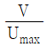
는?- 2
- 1
- 0.5
- 0.1
(정답률: 29%)
14. 수직 충격파(normal shock wave)에 대한 설명 중 옳지 않은 것은?
- 수직 충격파는 아음속 유동에서 초음속 유동으로 바뀌어 갈 때 발생한다.
- 충격파를 가로지르는 유동은 등엔트로피 과정이 아니다.
- 수직 충격파 발생 직후의 유동조건은 h-s 선도로 나타낼 수 있다.
- 1차원 유동에서 일어날 수 있는 충격파는 수직 충격파 뿐이다.
(정답률: 23%)
15. 지름 4cm 인 매끈한 관에 동점성계수가 1.57×10-5 m2/s 인 공기가 0.7m/s 의 속도로 흐르고, 관의 길이가 70m이다. 이에 대한 손실수두는 몇 m 인가?
- 1.27
- 1.37
- 1.47
- 1.57
(정답률: 18%)
16. 도플러효과(doppler effect)를 이용한 유량계는?
- 에뉴바 유량계
- 초음파 유량계
- 오벌 유량계
- 열선 유량계
(정답률: 35%)
17. 압축성 유체의 유속계산에 사용되는 Mach 수의 표현으로 옳은 것은?
- 음속/유체의 속도
- 유체의 속도/음속
- (음속)2
- 유체의 속도×음속
(정답률: 25%)
18. 지름이 3m 원형 기름 탱크의 지붕이 평평하고 수평이다. 대기압이 1atm 일 때 대기가 지붕에 미치는 힘은 몇 kgf 인가?
- 7.3×102
- 7.3×103
- 7.3×104
- 7.3×105
(정답률: 26%)
19. 온도 20℃, 압력 5kgf/cm2 인 이상기체 10cm3를 등온 조건에서 5cm3 까지 압축하면 압력은 약 몇 kgf/cm2 인가?
- 2.5
- 5
- 10
- 20
(정답률: 24%)
20. 기계효율은 ηm, 수력효율을 ηh, 체적효율을 ηv라 할 때 펌프의 총효율은?
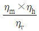
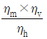
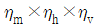
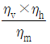
(정답률: 25%)
2과목: 연소공학
21. 카르노 사이클에서 열효율과 열량, 온도와의 관계가 옳은 것은? (단, Q1＞Q2, T1＞T2)
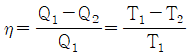
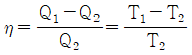
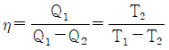
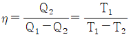
(정답률: 37%)
22. 기체 연소 시 소염현상이 원인이 아닌 것은?
- 산소농도가 증가할 경우
- 가연성 기체, 산화제가 화염 반응대에서 공급이 불충분할 경우
- 가연성가스가 연소범위를 벗어날 경우
- 가연성가스에 불활성기체가 포함될 경우
(정답률: 29%)
23. 층류 예혼합화염과 비교한 난류 예혼합화염의 특징에 대한 설명으로 틀린 것은?
- 연소속도가 빨라진다.
- 화염의 두께가 두꺼워진다.
- 휘도가 높아진다.
- 화염의 배후에 미연소분이 남지 않는다.
(정답률: 15%)
24. 과잉공기가 너무 많은 경우의 현상이 아닌 것은?
- 열효율을 감소시킨다.
- 연소온도가 증가한다.
- 배기가스의 열손실을 증대시킨다.
- 연소가스량이 증가하여 통풍을 저해한다.
(정답률: 33%)
25. 수소(H2, 폭발범위 : 4.0~75v%)의 위험도는?
- 0.95
- 17.75
- 18.75
- 71
(정답률: 22%)
26. 확산연소에 대한 설명으로 틀린 것은?
- 확산연소 과정은 연료와 산화제의 혼합속도에 의존한다.
- 연료와 산화제의 경계면이 생겨 서로 반대 측 면에서 경계면으로 연료와 산화제가 확산해 온다.
- 가스라이터의 연소는 전형적인 기체연료의 확산화염이다.
- 연료와 산화제가 적당 비율로 혼합되어 가연혼합기를 통과할 때 확산화염이 나타난다.
(정답률: 18%)
27. -5℃ 얼음 10g을 16℃의 물로 만드는데 필요한 열량은 약 몇 kJ 인가? (단, 얼음의 비열은 2.1J/g·K, 융해열은 335J/g·K, 물의 비열은 4.2J/g·K 이다.)
- 3.4
- 4.2
- 5.2
- 6.4
(정답률: 23%)
28. 이산화탄소의 기체상수(R) 값과 가장 가까운 기체는?
- 프로판
- 수소
- 산소
- 질소
(정답률: 21%)
29. 증기의 성질에 대한 설명으로 틀린 것은?
- 증기의 압력이 높아지면 엔탈피가 커진다.
- 증기의 압력이 높아지면 현열이 커진다.
- 증기의 압력이 높아지면 포화 온도가 높아진다.
- 증기의 압력이 높아지면 증발열이 커진다.
(정답률: 12%)
30. 산화염과 환원염에 대한 설명으로 가장 옳은 것은?
- 산화염은 이론공기량으로 완전연소시켰을 때의 화염을 말한다.
- 산화염은 공기비를 아주 크게 하여 연소가스 중 산소가 포함된 화염을 말한다.
- 환원염은 이론공기량으로 완전연소시켰을 때의 화염을 말한다.
- 환원염은 공기비를 아주 크게 하여 연소가스 중 산소가 포함된 화염을 말한다.
(정답률: 14%)
31. 본질안전 방폭구조의 정의로 옳은 것은?
- 가연성가스에 점화를 방지할 수 있다는 것이 시험 그 밖의 방법으로 확인된 구조
- 정상 시 및 사고 시에 발생하는 전기불꽃, 고온부로 인하여 가연성가스가 점화되지 않는 것이 점화시험 그 밖의 방버에 의해 확인된 구조
- 정상 운전 중에 전기불꽃 및 고온이 생겨서는 안 되는 부분에 점화가 생기는 것을 방지하도록 구조상 및 온도상승에 대비하여 특별히 안전성을 높이는 구조
- 용기 내부에서 가연성가스의 폭발이 일어났을 때 용기가 압력에 본질적으로 견디고 외부의 폭발성가스에 인화할 우려가 없도록 한 구조
(정답률: 11%)
32. 천연가스의 비중측정 방법은?
- 분젠실링법
- Soap bubble 법
- 라이트법
- 윤켈스법
(정답률: 25%)
33. 비열에 대한 설명으로 옳지 않은 것은?
- 정압비열은 정적비열보다 항상 크다.
- 물질의 비열은 물질의 종류와 온도에 따라 달라진다.
- 비열비가 큰 물질일수록 압축 후의 온도가 더 높다.
- 물은 비열이 작아 공기보다 온도를 증가시키기 어렵고 열용량도 적다.
(정답률: 29%)
34. 고발열량과 저발열량의 값이 다르게 되는 것은 다음 중 주로 어떤 성분 때문인가?
- C
- H
- O
- S
(정답률: 21%)
35. 폭굉(detonation)에 대한 설명으로 가장 옳은 것은?
- 가연성기체와 공기가 혼합하는 경우에 넓은 공간에서 주로 발생한다.
- 화재로의 파급효과가 적다.
- 에너지 방출속도는 물질전달속도의 영향을 받는다.
- 연소파를 수반하고 난류확산의 영향을 받는다.
(정답률: 26%)
36. 불활성화 방법 중 용기의 한 개구부로 불활성가스를 주입하고 다른 개구부로부터 대기 또는 스크레버로 혼합가스를 방출하는 퍼지방법은?
- 진공퍼지
- 압력퍼지
- 스위프퍼지
- 사이폰퍼지
(정답률: 21%)
37. 이상기체와 실제기체에 대한 설명으로 틀린 것은?
- 이상기체는 기체 분자간 인력이나 반발력이 작용하지 않는다고 가정한 가상적인 기체이다.
- 실제기체는 실제로 존재하는 모든 기체로 이상기체 상태방정식이 그대로 적용되지 않는다.
- 이상기체는 저장용기의 벽에 충돌하여도 탄성을 잃지 않는다.
- 이상기체 상태방정식은 실제기체에서는 높은 온도, 높은 압력에서 잘 적용된다.
(정답률: 25%)
38. 고체연료의 고정층을 만들고 공기를 통하여 연소시키는 방법은?
- 화격자 연소
- 유동층 연소
- 미분탄 연소
- 훈연 연소
(정답률: 15%)
39. 연소범위는 다음 중 무엇에 의해 주로 결정되는가?
- 온도, 부피
- 부피, 비중
- 온도, 압력
- 압력, 비중
(정답률: 29%)
40. 부탄(C4H10) 2Sm3를 완전 연소시키기 위하여 약 몇 Sm3의 산소가 필요한가?
- 5.8
- 8.9
- 10.8
- 13.0
(정답률: 20%)
3과목: 가스설비
41. 브롬화메틸 30톤(T=110℃), 펩탄 50톤(T=120℃), 시안화수소 20톤(T=100℃)이 저장되어있는 고압가스 특정제조시설의 안전구역 내 고압가스 설비의 연소열량은 약 몇 kcal 인가? (단, T는 상용온도를 말한다.)
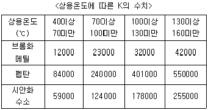
- 6.2×107
- 5.2×107
- 4.9×106
- 2.5×106
(정답률: 18%)
42. 왕복식 압축기에서 체적효율에 영향을 주는 요소로서 가장 거리가 먼 것은?
- 클리어런스
- 냉각
- 토출밸브
- 가스 누설
(정답률: 19%)
43. 온도 T2 저온체에서 흡수한 열량을 q2, 온도 T1 인 고온체에서 버린 열량을 q1이라할 때 냉동기의 성능계수는?
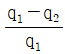
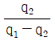
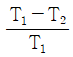
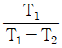
(정답률: 25%)
44. 액화석유가스충전사업자는 액화석유가스를 자동차에 고정된 용기에 충전하는 경우에 허용오차를 벗어나 정량을 미달되게 공급해서는 아니 된다. 이 때, 허용오차의 기준은?
- 0.5%
- 1%
- 1.5%
- 2%
(정답률: 15%)
45. 매몰 용접형 가스용 볼밸브 중 퍼지관을 부착하지 아니한 구조의 볼밸브는?
- 짧은 몸통형
- 일체형 긴 몸통형
- 용접형 긴 몸통형
- 소코렛(Sokolet)식 긴 몸통형
(정답률: 15%)
46. 아세틸렌 제조설비에서 제조공정 순서로서 옳은 것은?
- 가스청정기 → 수분제거기 → 유분제거기 → 저장탱크 → 충전장치
- 가스발생로 → 쿨러 → 가스청정기 → 압축기 → 충전장치
- 가스반응로 → 압축기 → 가스청정기 → 역화방지기 → 충전장치
- 가스발생로 → 압축기 → 쿨러 → 건조기 → 역화방지기 → 충전장치
(정답률: 23%)
47. 차량에 고정된 탱크의 저장능력을 구하는 식은? (단, V : 내용적, P : 최고 충전압력, C : 가스종류에 따른 정수, d : 상용온도에서의 액비중이다.)
- 10PV
- (10P+1)V
- V/C
- 0.9dV
(정답률: 22%)
48. 수소를 공업적으로 제조하는 방법이 아닌 것은?
- 수전해법
- 수성가스법
- LPG분해법
- 석유 분해법
(정답률: 18%)
49. 펌프의 특성 곡선상 체절운전(체절양정)이란 무엇인가?
- 유량이 0 일 때의 양정
- 유량이 최대일 때의 양정
- 유량이 이론값일 때의 양정
- 유량이 평균값일 때의 양정
(정답률: 15%)
50. 고압으로 수송하기 위해 압송기가 필요한 프로세스는?
- 사이클링식 접촉분해 프로세스
- 수소화 분해 프로세스
- 대체천연가스 프로세스
- 저온 수증기개질 프로세스
(정답률: 18%)
51. 부식방지 방법에 대한 설명으로 틀린 것은?
- 금속을 피복한다.
- 선택배류기를 접속시킨다.
- 이종의 금속을 접촉시킨다.
- 금속표면의 불균일을 없앤다.
(정답률: 25%)
52. 가스렌지의 열효율을 측정하기 위하여 주전자에 순수 1000g을 넣고10분간 가열하였더니 처음 15℃ 인 물의 온도가 70℃가 되었다. 이 가스렌지의 열효율은 약 몇 % 인가? (단, 물의 비열은 1 kcal/kg·℃, 가스 사용량은 0.008m3, 가스 발열량은 13000kcal/m3 이며, 온도 및 압력에 대한 보정치는 고려하지 않는다.)
- 38
- 43
- 48
- 53
(정답률: 19%)
53. 도시가스에 냄새가 나는 부취제를 첨가하는데, 공기 중 혼합비율의 용량으로 얼마의 상태에서 감지할 수 있도록 첨가하고 있는가?
- 1/1000
- 1/2000
- 1/3000
- 1/5000
(정답률: 25%)
54. 다음 보기에서 설명하는 합금원소는?
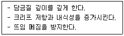
- Cr
- Si
- Mo
- Ni
(정답률: 18%)
55. 피셔(Fisher)식 정압기에 대한 설명으로 틀린 것은?
- 파일롯 로딩형 정압기와 작동원리가 같다.
- 사용량이 증가하면 2차 압력이 상승하고 구동 압력은 저하한다.
- 정특성 및 동특성이 양호하고 비교적 간단하다.
- 닫힘 방향의 응답성을 향상시킨 것이다.
(정답률: 23%)
56. 다기능 가스안전계량기(마이콤 메타)의 작동성능이 아닌 것은?
- 유량 차단성능
- 과열 차단성능
- 압력저하 차단성능
- 연속사용시간 차단성능
(정답률: 18%)
57. 수소 압축가스 설비란 압축기로부터 압축된 수소가스를 저장하기 위한 것으로서 설계압력이 얼마를 초과하는 압력용기를 말하는가?
- 9.8MPa
- 41MPa
- 49MPa
- 98MPa
(정답률: 19%)
58. 시동하기 전에 프라이밍이 필요한 펌프는?
- 터빈펌프
- 기어펌프
- 플린저펌프
- 피스톤펌프
(정답률: 15%)
59. 다음 금속재료에 대한 설명으로 틀린 것은?
- 강에 P(인)의 함유량이 많으면 신율, 충격치는 저하된다.
- 18% Cr, 8% Ni을 함유한 강을 18-8스테인리스강이라 한다.
- 금속가공 중에 생긴 잔류응력을 제거할 때에는 열처리를 한다.
- 구리와 주석의 합금은 황동이고, 구리와 아연의 합금은 청동이다.
(정답률: 22%)
60. 염화수소(HCl)에 대한 설명으로 틀린 것은?
- 폐가스는 대량의 물로 처리한다.
- 누출된 가스는 암모니아수로 알 수 있다.
- 황색의 자극성 냄새를 갖는 가연성 기체이다.
- 건조 상태에서는 금속을 거의 부식시키지 않는다.
(정답률: 21%)
4과목: 가스안전관리
61. 가스의 종류와 용기 도색의 구분이 잘못된 것은?
- 액화암모니아 : 백색
- 액화염소 : 갈색
- 헬륨(의료용) : 자색
- 질소(의료용) : 흑색
(정답률: 18%)
62. 가스시설과 관련하여 사람이 사망한 사고 발생 시 규정상 도시가스사업자는 한국가스안전공사에 사고발생 후 얼마 이내에 서면으로 통보하여야 하는가?
- 즉시
- 7일 이내
- 10일 이내
- 20일 이내
(정답률: 14%)
63. 독성가스 운반차량의 뒷면에 완중장치로 설치하는 범퍼의 설치 기준은?
- 두께 3mm 이상, 폭 100mm 이상
- 두께 3mm 이상, 폭 200mm 이상
- 두께 5mm 이상, 폭 100mm 이상
- 두께 5mm 이상, 폭 200mm 이상
(정답률: 19%)
64. 특수고압가스가 아닌 것은?
- 디실란
- 삼불화인
- 포스겐
- 액화알진
(정답률: 27%)
65. 저장탱크에 의한 LPG 저장소에서 액화석유가스 저장탱크의 저장능력은 몇 ℃ 에서의 액 비중을 기준으로 계산하는가?
- 0℃
- 4℃
- 15℃
- 40℃
(정답률: 22%)
66. 안전관리 수준평가의 분야별 평가항목이 아닌 것은?
- 안전사고
- 비상사태 대비
- 안전교육 훈련 및 홍보
- 안전관리 리더십 및 조직
(정답률: 18%)
67. 산소 제조 및 충전의 기준에 대한 설명으로 틀린 것은?
- 공기액화분리장치기에 설치된 액화산소통안의 액화산소 5L 중 탄화수소의 탄소질량이 500mg 이상이면 액화산소를 방출한다.
- 용기와 밸브사이에는 가연성 패킹을 사용하지 않는다.
- 피로갈롤 시약을 사용한 오르자트법 시험결과 순도가 99% 이상이어야 한다.
- 밀폐형의 수전해조에는 액면계와 자동급수장치를 설치한다.
(정답률: 22%)
68. 에틸렌에 대한 설명으로 틀린 것은?
- 3중 결합을 가지므로 첨가반응을 일으킨다.
- 물에는 거의 용해되지 않지만 알코올, 에테르에는 용해된다.
- 방향을 가지는 무색의 가연성 가스이다.
- 가장 간단한 올레핀계 탄화수소이다.
(정답률: 15%)
69. 액화석유가스를 용기에 의하여 가스소비자에게 공급할 때의 기준으로 옳지 않은 것은?
- 공급설비를 가스공급자의 부담으로 설치한 경우 최초의 안전공급 계약기간은 주택은 2년 이상으로 한다.
- 다른 가스공급자와 안전공급계약이 체결된 가스소비자에게는 액화석유가스를 공급할 수 없다.
- 안전공급계약을 체결한 가스공급자는 가스소비자에게 지체 없이 소비설비 안전점검표를 발급하여야 한다.
- 동일 건축물 내 여러 가스소비자에게 하나의 공급설비로 액화석유가스를 공급하는 가스공급자는 그 가스 소비자의 대표자와 안전공급계약을 체결할 수 있다.
(정답률: 28%)
70. 가스안전사고 원인을 정확히 분석하여야 하는 가장 주된 이유는?
- 산재보험금 처리
- 사고의 책임소재 명확화
- 부당한 보상금의 지급 방지
- 사고에 대한 정확한 예방대책 수립
(정답률: 33%)
71. 지상에 설치하는 액화석유가스의 저장탱크 안전밸브에 가스방출관을 설치하고자 한다. 저장탱크의 정상부가 지상에서 8m 일 경우 방출구의 높이는 지면에서 몇 m 이상 이어야 하는가?
- 8
- 10
- 12
- 14
(정답률: 22%)
72. 독성가스 충전용기 운반 시 설치하는 경계표시는 차량구조상 정사각형으로 표시할 경우 그 면적을 몇 cm2 이상으로 하여야 하는가?
- 300
- 400
- 500
- 600
(정답률: 19%)
73. 고압가스 저장시설에서 사업소 밖의 지역에 고압의 독성가스 배관을 노출하여 설치하는 경우 학교와 안전 확보를 위하여 필요한 유지거리의 기준은?
- 40m
- 45m
- 72m
- 100m
(정답률: 15%)
74. 납붙임 용기 또는 접합 용기에 고압가스를 충전하여 차량에 적재할 때에는 용기의 이탈을 막을 수 있도록 어떠한 조치를 취하여야 하는가?
- 용기에 고무링을 씌운다.
- 목재 칸막이를 한다.
- 보호망을 적재함 위에 씌운다.
- 용기 사이에 패킹을 한다.
(정답률: 25%)
75. 액화석유가스 용기용 밸브의 기밀시험에 사용되는 기체로서 가장 부적당한 것은?
- 헬륨
- 암모니아
- 질소
- 공기
(정답률: 34%)
76. 내용적이 50L인 아세틸렌 용기의 다공도가 75% 이상, 80% 미만일 때 디메틸포름아미드의 최대 충전량은?
- 36.3% 이하
- 37.8% 이하
- 38.7% 이하
- 40.3% 이하
(정답률: 20%)
77. 액화석유가스 저장탱크를 지상에 설치하는 경우 저장능력이 몇 톤 이상일 때 방류둑을 설치해야 하는가?
- 1000
- 2000
- 3000
- 5000
(정답률: 19%)
78. 고압가스 제조시설에서 초고압이란?
- 압력을 받는 금속부의 온도가 –50℃ 이상 350℃ 이하인 고압가스 설비의 상용압력 19.6MPa를 말한다.
- 압력을 받는 금속부의 온도가 –50℃ 이상 350℃ 이하인 고압가스 설비의 상용압력 98MPa를 말한다.
- 압력을 받는 금속부의 온도가 –50℃ 이상 450℃ 이하인 고압가스 설비의 상용압력 19.6MPa를 말한다.
- 압력을 받는 금속부의 온도가 –50℃ 이상 450℃ 이하인 고압가스 설비의 상용압력 98MPa를 말한다.
(정답률: 22%)
79. 고압가스 충전시설에서 2개 이상의 저장탱크에 설치하는 집합 방류둑의 용량이 보기와 같을 때 칸막이로 분리된 방류둑의 용량(m3)은?
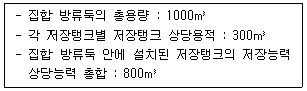
- 300
- 325
- 350
- 375
(정답률: 18%)
80. 액화석유가스 사용시설에 설치되는 조정압력 3.3kPa 이하인 조정기의 안전장치 작동정지 압력의 기준은?
- 7kPa
- 5.6kPa ~ 8.4kPa
- 5.04kPa ~ 8.4kPa
- 9.9kPa
(정답률: 24%)
5과목: 가스계측기기
81. 물이 흐르고 있는 관 속에 피토관(pitot tube)을 수인이 든 U자 관에 연결하여 전압과 정압을 측정하였더니 75mm의 액면차이가 생겼다. 피토관 위치에서의 유속은 약 몇 m/s 인가?
- 3.1
- 3.5
- 3.9
- 4.3
(정답률: 18%)
82. 램버트-비어의 법칙을 이용한 것으로 미량분석에 유용한 화학분석법은?
- 적정법
- GC법
- 분광광도법
- ICP법
(정답률: 25%)
83. 오르자트 가스분석 장치로 가스를 측정할때의 순서로 옳은 것은?
- 산소→일산화탄소→이산화탄소
- 이산화탄소→산소→일산화탄소
- 이산화탄소→일산화탄소→산소
- 일산화탄소→산소→이산화탄소
(정답률: 29%)
84. 가스계량기의 설치에 대한 설명으로 옳은 것은?
- 가스계량기는 화기와 1m 이상의 우회거리를 유지한다.
- 설치높이는 바닥으로부터 계량기 지시장치의 중심까지 1.6m 이상 2.0m 이내에 수직·수평으로 설치한다.
- 보호상자 내에 설치할 경우 바닥으로부터 1.6m 이상 2.0m 이내에 수직·수평으로 설치한다.
- 사람이 거처하는 곳에 설치할 경우에는 격납상자에 설치한다.
(정답률: 29%)
85. 연소기기에 대한 배기가스 분석의 목적으로 가장 거리가 먼 것은?
- 연소상태를 파악하기 위하여
- 배기가스 조성을 얻기 위하여
- 열정산의 자료를 얻기 위하여
- 시료가스 채취장치의 작동상태를 파악하기 위해
(정답률: 25%)
86. 액체의 정압과 공기 압력을 비교하여 액면의 높이를 측정하는 액면계는?
- 기포관식 액면계
- 차동변압식 액면계
- 정전용량식 액면계
- 공진식 액면계
(정답률: 19%)
87. 압력 계측기기 중 직접 압력을 측정하는 1차 압력계에 해당하는 것은?
- 부르동관 압력계
- 벨로우즈 압력계
- 액주식 압력계
- 전기저항 압력계
(정답률: 15%)
88. 루트(Roots) 가스미터의 특징에 해당되지 않는 것은?
- 여과기 설치가 필요하다.
- 설치면적이 크다.
- 대유량 가스측정에 적합하다.
- 중압가스의 계량이 가능하다.
(정답률: 19%)
89. 가스미터의 구비조건으로 거리가 먼 것은?
- 소형으로 용량이 작을 것
- 기차의 변화가 없을 것
- 감도가 예민할 것
- 구조가 간단할 것
(정답률: 28%)
90. 온도가 21℃에서 상대습도 60%의 공기를 압력은 변화하지 않고 온도를 22.5℃로 할 때, 공기의 상대습도는 약 얼마인가?
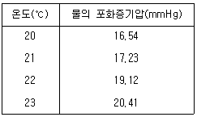
- 52.30%
- 53.63%
- 54.13%
- 55.95%
(정답률: 23%)
91. 잔류편차(off-set)가 없고 응답상태가 빠른 조절 동작을 위하여 사용하는 제어방식은?
- 비례(P)동작
- 비례적분(PI)동작
- 비례미분(PD)동작
- 비례적분미분(PID)동작
(정답률: 29%)
92. NOx를 분석하기 위한 화학발광검지기는 Carrier가스가 고온으로 유지된 반응관 내에 시료를 주입시키면, 시료 중의 질소화합물은 열분해된 후 O2가스에 의해 산화되어 NO상태로 된다. 생성된 NO Gas를 무슨 가스와 반응시켜 화학발광을 일으키는가?
- H2
- O2
- O3
- N2
(정답률: 18%)
93. 액체산소, 액체질소 등과 같이 초저온 저장탱크에 주로 사용되는 액면계는?
- 마그네틱 액면계
- 햄프슨식 액면계
- 벨루우즈식 액면계
- 슬립튜브식 액면계
(정답률: 30%)
94. 1차 제어장치가 제어량을 측정하고 2차 조절계의 목표값을 설정하는 것으로서 외란의 영향이나 낭비시간 지연이 큰 프로세서에 적용되는 제어방식은?
- 캐스케이드제어
- 정치제어
- 추치제어
- 비율제어
(정답률: 36%)
95. 광고온계의 특징에 대한 설명으로 틀린 것은?
- 비접촉식으로는 아주 정확하다.
- 약 3000℃ 까지 측정이 가능하다.
- 방사온도계에 비해 방사율에 의한 보정량이 적다.
- 측정 시 사람의 손이 필요 없어 개인오차가 적다.
(정답률: 28%)
96. 0℃에서 저항이 120Ω이고 저항온도계수가 0.0025인 저항온도계를 어떤 로 안에 삽입하였을 때 저항이 216Ω이 되었다면 로 안의 온도는 약 몇 ℃ 인가?
- 125
- 200
- 320
- 534
(정답률: 18%)
97. 기체 크로마토그래피에서 사용되는 캐리어가스에 대한 설명으로 틀린 것은?
- 헬륨, 질소가 주로 사용된다.
- 시료분자의 확산을 가능한 크게 하여 분리도가 높게 한다.
- 시료에 대하여 불활성이어야 한다.
- 사용하는 검출기에 적합하여야 한다.
(정답률: 24%)
98. 기체 크로마토그래피에서 사용되는 모세관 컬럼 중 모세관 내부를 규조토와 같은 고체 지지체 물질로 얇은 막으로 입히고 그 위에 액체 정지상이 흡착되어 있는 것은?
- FSOT
- 충전컬럼
- WCOT
- SCOT
(정답률: 25%)
99. 벤젠, 톨루엔, 메탄의 혼합물을 기체 크로마토그래피에 주입하였다. 머무림이 없는 메탄은 42초에 뾰족한 피크를 보이고 벤젠은 251초, 톨루엔은 335초에 용리하였다. 두 용질의 상대 머무름은 약 얼마인가?
- 1.1
- 1.2
- 1.3
- 1.4
(정답률: 11%)
100. 1015를 의미하는 계량단위 접두어는?
- 요타
- 제타
- 엑사
- 페타
(정답률: 22%)